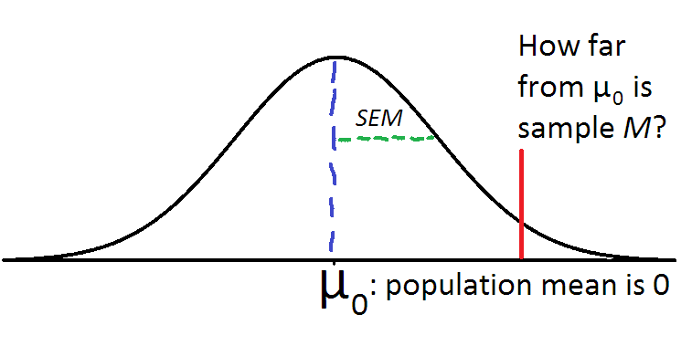
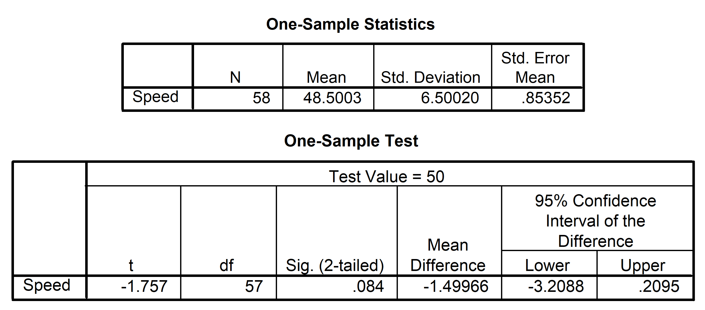
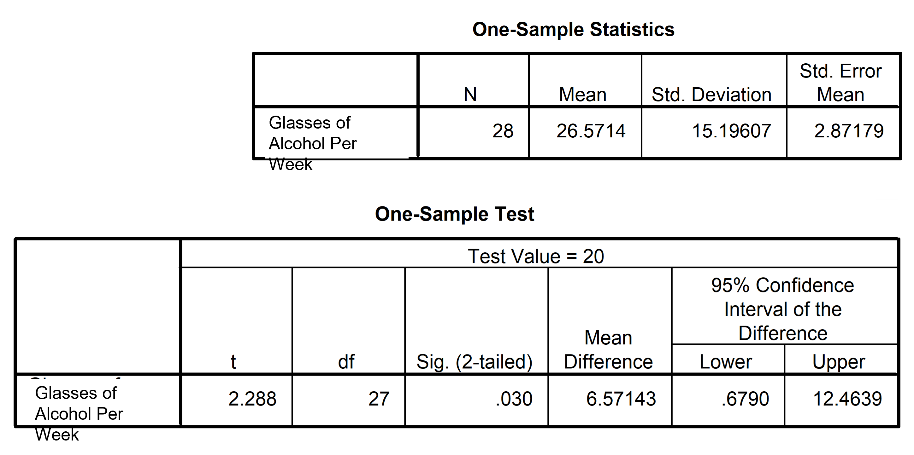

| Decision | Ha | H0 |
|---|---|---|
| Reject H0 | Correct decision! | Type I error: \(\alpha\) |
| Accept H0 | Type II error: \(\beta\) | Correct decision! |
Lecture 4 - Testing Hyptotheses
Caspar J. van Lissa
2023-07-23
Statistical Testing
Sampling theory

Inferential statistics
Using sample data to infer properties of the population
We previously covered estimation
- Using sample statistics as best guess of population parameters
- Using standard errors to express uncertainty about the accuracy of that guess
- \(M\) is an estimate of \(\mu\)
- \(SE_M\) indicates our uncertainty about that estimate
More inferential statistics
Hypothesis testing is another inferential procedure
- Drawing conclusions about the population based on the sample
- These conclusions are based on calculated probabilities
- We use the normal distribution (as before)
Intuitive example
- Observation: Your car won’t start.
- Theory: The battery is dead.
- Hypothesis: If the battery is dead, then…
- Using jumper cables will start the car
- Charging the battery will start the car
- Replacing the battery will start the car
- Experiment: You replace the battery.
- Data: The car starts.
- Conclusion: The battery was indeed dead.
Statistical testing
In the previous example, all you need to test the hypothesis is one piece of evidence
- Car starts or not
Statistical hypothesis tests instead use probability calculus
- This allows you to test hypotheses in the presence of uncertainty
Intuitive example, adapted
- Observation: 6% of Brand X cars have trouble starting within the first year.
- Theory: The battery has too low capacity.
- Hypothesis: If the battery is dead, then…
- Increasing battery capacity will solve the problem.
- Experiment: Brand X switches to larger batteries.
- Data: In a sample of 1000 Brand X cars,
4.3% have trouble starting within the first year. - Conclusion: ?
Is this improvement significant, relative to random variation between samples?
Steps for testing
- Formulate hypotheses
- Testable proposition about population parameters
- Calculate test statistic
- Describes how many standard errors away from the population statistic under the null hypothesis the sample statistic is
- Calculate p-value
- Probability of observing a value at least as extreme as the sample statistic, if \(H_0\) were true
- Draw conclusion about null hypothesis
- (Act as if) we reject or fail to reject it
Hypotheses
Theory vs. Hypothesis
Theory:
- Systematic explanation for phenomena
- Can include assumptions about causality
Hypothesis:
- Proposition about the population that can be tested in a sample
- Assumption about the state of the world that is put to the test
- Must be made before seeing the results
Problem of Induction
You cannot derive general rules from specific evidence
- If you’ve only ever seen white swans, you might develop a theory that all swans are white
- But black swans do exist, so your theory would be wrong
- No matter how much evidence you observe
Deduction and Induction
Deduction: ‘top down’, from theory to specific observations
- Premise: All humans are mortal.
- Premise: Socrates is human.
- Conclusion: Socrates is mortal.
If the premises are true, then the conclusion must be true
Inductive: ‘bottom up’, from specific observations to general theory
- Premise: All swans I have observed were white
- Conclusion: Therefore, all swans are white
The conclusion can be (in this case, is) wrong
Problem of Induction
Can’t go from specific observations to general rules
- Because the same evidence could be explained by multiple rules

Reveal
Falsificationism
Popper: “solved” problem of induction by introducing falsificationism
- Scientific theories must be testable and conceivable proven false
- Tests cast doubt on hypotheses, not provide evidence for them
- E.g.: Observing one black swan rejects theory that “all swans are white”
Falsificationism and Testing
How Popper is applied in statistical inference:
- We formulate a “null hypothesis”, whose sole purpose is to be rejected
- This null hypothesis is the opposite of what the researcher believes
- We could argue about whether this makes sense
- You will see a lot of “nil hypotheses”:
- Hypothesis that a value / difference / effect is equal to zero
- Rejecting this hypothesis implies acting as if there is a non-zero effect
- Software often uses nil hypotheses by default
- Criticism: null hypothesis is a “straw man”, nobody believes it
- Alternatives: Bayesian statistics, informative hypothesis tests, smallest effect of interest
What kind of hypotheses?
Equality hypotheses:
- \(H: \mu = 0\)
- \(H: \mu = 6.4\), which is the same as \(H: \mu - 6.4 = 0\)
- \(H: \mu_1 = \mu_2\), which is the same as \(H: (\mu_1 - \mu_2) = 0\)
Inequality hypotheses
- Larger or smaller
- \(H: \mu > 0\)
- \(H: \mu < 6.4\), which is the same as \(H: \mu - 6.4 < 0\)
- \(H: \mu_1 > \mu_2\), which is the same as \(H: (\mu_1 - \mu2) > 0\)
Null and alternative hypotheses
The null hypothesis exists only to be rejected,
the alternative hypothesis reflects the researcher’s true beliefs
\(H_0\) vs. \(H_A\)
There are two philosophies of testing:
- Fisher:
- Implicit alternative hypothesis which is mutually exclusive with \(H_0\)
- If \(H_0: \mu = 0\), then \(H_A: \mu \neq 0\)
- If \(H_0: \mu \leq 0\), then \(H_A: \mu > 0\)
- Neyman-Pearson:
- Explicit alternative hypothesis for specific expected effect size
- E.g., \(H_0: \mu = 0\), \(H_A: \mu = 6.4\)
- By stating what effect size we expect,
we can calculate the probability of finding an effect that really exists
Test statistics
What is a test statistic
Simple definition:
- Distance between the hypothesized population value and the sample statistic, in standard errors
- In other words: We standardize that distance by dividing by standard errors
We use the familiar formula for the Z-distribution to obtain the Z test statistic:
\(Z = \frac{M - \mu_0}{SE_\mu}\)
- \(M\) is the sample mean
- \(\mu_0\) is the expected population mean under \(H_0\)
- \(SE_\mu\) is the standard error
Calculate test statistic
E.g.: \(H_0: \mu = 6.4, SE_\mu = .2\), and \(M = 6.8\)
- The test statistic is \(Z = \frac{M - \mu_0}{SE_\mu} = \frac{6.8 - 6.4}{.2} = 2\)
Example
Dutch people are quite tall. Worldwide distribution: \(~N(\mu = 167, \sigma = 7.5)\)
Hypothesis: Dutch people are significantly taller than the worldwide average.
Sample: Convenience sample of 20 students, \(M = 171\)
- \(H_0: \mu_0 \leq 167\): The population mean is 167 or smaller
- \(H_a: \mu_0 > 167\): The population mean exceeds 167
\(Z = \frac{M-\mu_0}{SE_\mu} = \frac{171-167}{7.5/\sqrt20} = 2.39\)
\(SE_M = \frac{\sigma}{\sqrt{n}}\)
P-value
The p-value
Statistical hypothesis tests use probability calculus
What probability?
Definition: Probability of observing data at least as extreme as our sample data, IF our (null) hypothesis were true.
\(P(Data | H_0)\)
Correct interpretation
P-values give you the probability of observing certain data, ASSUMING THAT \(H_0\) is true
They do NOT give you the probability of \(H_0\) being true or false!
\(p = .0001\)
- Correct: it’s extremely unlikely to observe these data if we assume that \(H_0\) is true
- INCORRECT: there’s a (1-.0001) = .9999 probability that \(H_0\) is false
\(p = .75\):
- Correct: it’s very common to observe these data if \(H_0\) is true
- Incorrect: 75% probability that \(H_0\) is true
To make probability statements about hypotheses, you need to use a different (Bayesian) definition of probability
Use the normal distribution
First, determine if you need the probability in one tail, or both
- One-sided hypothesis (\(H_0: \mu \leq / \geq\)? One tailed
- Two-sided hypothesis (\(H_0: \mu =\))? Two-tailed
SPSS (and many other programs) only give two-tailed p-value
- If the effect is in the hypothesized direction, divide \(p/2\)
- If not, it’s non-significant
What to do with the p-value?
Two philosophies:
1. Fisher:
- Specify only a null hypothesis \(H_0\)
- p-value quantifies incompatibility of the data with \(H_0\)
- The more incompatible (i.e., smaller p-value), the more skeptical we become of \(H_0\)
What to do with the p-value?
2. Neyman-Pearson:
- Specific null- and alternative hypothesis
- Determine alpha and beta level
- Alpha conventionally set at .05
- Beta < .2 considered to be desirable (power analysis)
- p-value compared against alpha to make a decision
- Binary decision; does not matter how much smaller
- Still report exact p-values so other researchers can use different approaches to inference
Conclusion
Reject null hypothesis
We reject \(H_0\) when:
- \(p < \alpha\)
This means that it’s very unlikely to observe data at least as extreme as we observed, assuming \(H_0\) is true
Don’t reject null hypothesis
We don’t reject \(H_0\) when:
- \(p \geq \alpha\):
This means that the data are unsurprising, assuming \(H_0\) is true
Critical Values
Critical values are the Z-values corresponding to the chosen \(\alpha\) level
- \(\alpha = P(Z > Z_{\text{critical}})\)
- So we also reject \(H_0\) when the test statistic exceeds the critical value, \(Z > Z_{\text{critical}}\)
- These are the same thing, because you look up \(p\) using the \(Z-value\)
Memorize the following critical values:
- For two-sided test and \(\alpha = .05\), the critical value is 1.96 (~2)
- For one-sided test and \(\alpha = .05\), the critical value is 1.64
Type I and Type II errors
When we test hypotheses, we (act as if) we accept or reject \(H_0\)
You could make two errors:
- Rejecting \(H_0\) but in reality \(H_0\) was true
- False-positive finding
- Incorrectly concluding you’ve found something (an effect, a difference, etc)
- Accepting \(H_0\) but in reality \(H_a\) is true
- False negative
- Concluding you’ve found nothing, but there was an effect out there
Type I and Type II errors
Alpha and beta
Alpha is the risk of a false-positive finding
- Conventionally, we use \(\alpha = .05\), 5% risk of Type I error
Beta is the risk of a false-negative finding
- If you specify a specific \(H_a\), you can calculate \(\beta\)!
- In general, \(\beta\) decreases if:
- The effect size is greater
- The sample is larger
- There is less “noise” (lower standard deviation)
Alpha and Beta are related
If you choose a lower \(\alpha\), your \(\beta\) will increase!
- Given a specific \(H_a\), you can balance the risk of Type I/II Errors
- Justify your choice!
- E.g., COVID repid tests: \(\alpha = .001, \beta = .50\)
- Is this the right balance?
- Consequence of false positive: infect other people, potentially get them very sick
- Consequence of false negative: stay home unnecessarily
Power
Defining power
Power: Probability of correctly finding a true effect
- It is simply \(1-\beta\)
- If you specify an alternative hypothesis \(H_a\), you can calculate \(\beta\)
- This works well for simple tests, like Z-tests
- For complex tests, calculations can be more advanced
- For very complex tests, people use “simulations”: Generating many fake datasets based on the hypothesized effect, analyzing them, and calculating the % of times they find a significant effect (= power)
For more on the relationship between power and sample size, see https://doi.org/10.1525/collabra.33267
Intuitive perspective on power
It’s like looking for something in a dark basement; your chance of finding it (= power) increases if:
- The object you’re looking for is big (large effect)
- You search for longer (sample size)
- The basement is uncluttered (low noise/standard deviation)
The t-distribution
Can we always use the Z-distribution?
- To use the Z-distribution, you need \(M, \mu_0,\) and \(\sigma\)
Problem: We rarely know \(\sigma\)
Solution: We estimate \(\sigma\) using our sample SD
As explained in a previous lecture, we can then use
- \(SE_M = \frac{SD}{\sqrt{n}}\) instead of \(SE_\mu = \frac{\sigma}{\sqrt{n}}\)
Accounting for uncertainty
Problem: Estimating \(\sigma\) using the sample SD introduces additional uncertainty (because SD is not EXACTLY equal to \(\sigma\))
- If we don’t account for this uncertainty, p-values will be too small
- Leading us to reject the null hypothesis too easily
- Increasing risk of false-positive findings!
Solution: We use a different distribution that gives slightly larger p-values
t-distribution
The t-distribution is similar to the Z-distribution: \(\bar{X} \sim t(\mu_0, SE_M, df)\)
- \(\mu_0\) is the population mean according to the null hypothesis
- \(SE_M\) is the sample estimate of the standard error
- \(df\) are the degrees of freedom: they control how thick the tails are
- Lower \(df\) -> thicker tails -> higher p-value for the same test statistic
- When \(df \geq 30\) the distribution converges to the Z-distribution: \(t_{n\geq30} \approx Z\)
t-distribution demo
t-test for a sample mean
Same calculation as for the Z-test!
Except you use SD instead of \(\sigma\)
- \(H_0\): The population mean of height is 167,
\(\mu_0 \leq 167\) - \(H_a\): The population mean of height exceeds 167,
\(\mu_0 > 167\)
\(SE_M = \frac{SD}{\sqrt{n}}\)
Sample: Convenience sample of 20 students, \(M = 171, SD = 8\),
- \(H_0: \mu_0 \leq 167\): The population mean is 167 or smaller
- \(H_a: \mu_0 > 167\): The population mean exceeds 167
\(t = \frac{M-\mu_0}{SE_M} = \frac{171-167}{8/\sqrt20} = 2.23\)
P-value for t-distribution
- In t-table in the book
- Using an online calculator, e.g. https://onecompiler.com/r:
pt(tvalue, df, sd, lower.tail = TRUE)- Excel (2-tailed):
=T.DIST(ABS(tvalue), df) - Divide by 2 to get one-tailed
- Excel (2-tailed):
Examples
Example 1
Do warning signs near roads (e.g., photos of heavy accidents) influence the average speed (tested at the 5% level)?
Example 1 steps
- Formulate hypotheses
- \(H_0: \mu_0 = 50\), \(H_a: \mu_0 \neq 50\)
- Calculate test statistic
- Do we know population \(\sigma\)? NO!
- So, calculate t: \(t = -1.76 = \frac{48.5 - 50}{6.5 / \sqrt{58}}\)
- Calculate p-value
- Given by SPSS: \(p = .084\)
- Draw conclusion about null hypothesis
- Fail to reject null hypothesis; data are not surprising if \(H_0\) is true
Example 1 one sided
But… we were trying to slow down cars! Doesn’t this hypothesis make more sense?
- Formulate hypotheses
- \(H_0: \mu_0 \geq 50\), \(H_a: \mu_0 < 50\)
- Calculate test statistic
- Do we know population \(\sigma\)? NO!
- So, calculate t: \(t = -1.76 = \frac{48.5 - 50}{6.5 / \sqrt{58}}\)
- Calculate p-value
- Divide SPSS two-sided p-value by 2: \(p = .084/2 = .042\)
- Draw conclusion about null hypothesis
- Reject null hypothesis; data are surprising if \(H_0\) is true
Reporting
On the road with signs, driving speed was significantly lower than the legal limit of 50km/h, \(M = 48.50, t(57) = -1.76, p = .04\). The null hypothesis that driving speed would be greater than 50 was rejected.
Example 2
Let’s say one is alcoholic if one consumes \(>20\) units of alcohol/week
Example 2 critical value
- Formulate hypotheses
- \(H_0: \mu_0 \leq 20\), \(H_a: \mu_0 > 20\)
- Calculate test statistic
- Do we know population \(\sigma\)? NO!
- So, calculate t: \(t = 2.28 = \frac{26.57 - 20}{15.20 / \sqrt{28}}\)
- Let’s use the critical value this time
- Reject \(H_0\) because \(t = 2.28\) exceeds \(t_{\text{critical}} = 1.703\)
Further reading
Fisher, Neyman-Pearson or NHST? A tutorial for teaching data testing
- Jose D. Perezgonzalez
- doi.org/10.3389/fpsyg.2015.00223
Improving Your Statistical Inferences
- Daniël Lakens
- https://lakens.github.io/statistical_inferences/01-pvalue.html